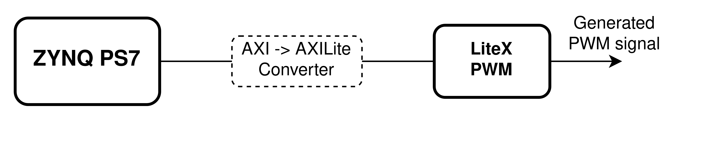

Getting started¶
This section demonstrates the basic usage of Topwrap to generate IP wrappers and a top module.
Create
IPWrapperobjects for every IP Core you want to use:
ips:
dma:
file: ips/DMATop.yaml
module: DMATop
disp:
file: ips/axi_dispctrl_v1_0.yaml
module: axi_dispctrl_v1_0
file and module are mandatory fields providing the IP description and the name of the HDL module. You can optionally set parameter values for IP cores:
axi_interconnect0:
file: axi_interconnect.yaml
module: axi_interconnect
parameters:
S_COUNT: 1
M_COUNT: 3
ADDR_WIDTH: 32
DATA_WIDTH: 32
ID_WIDTH: 12
M_BASE_ADDR: 0x43c2000043c1000043c00000
M_ADDR_WIDTH:
value: 0x100000001000000010
width: 96
Connect desired ports of the IP cores:
ports:
dma:
clock: [some_other_ip, clk_out]
reset: [reset_core, reset0]
axi_interconnect0:
clk: [some_other_ip, clk_out]
Connect desired interfaces of the IP cores:
interfaces:
dma:
s_axi: [axi_interconnect0, m_axi_0]
axi_interconnect0:
m_axi: [some_other_ip, 's_axi']
Specify external ports of the top module
external:
dma:
- io_irq_readerDone
- io_irq_writerDone
Create a Core file template for FuseSoC, or use a default one bundled with Topwrap.
You may want to modify the file to add dependencies, source files, or change the target board. The file should be named core.yaml.j2. You can find an example template in examples/hdmi directory of the project. If you don’t create any template a default template bundled with Topwrap will be used (stored in templates directory).
Place any additional source files in a directory, which we will be calling sources here.
Run Topwrap:
python -m fpga_topwrap --design project.yml --sources sources
Example PWM design¶
There’s an example setup in examples/pwm.
In order to generate the top module, run:
make generate
In order to generate bitstream, add Vivado to your path and run:
make
The FPGA design utilizes an AXI-mapped PWM IP Core.
You can access its registers starting from address 0x4000000 (that’s the base address of AXI_GP0 on ZYNQ).
Each IP Core used in the project is declared in ips section in project.yml file.
ports section allows to connect individual ports of IP Cores, and interfaces is used analogously for connecting whole interfaces.
Finally, you can specify which ports will be used as external I/O in external section.
To connect the I/O signals to specific FPGA pins, you need proper mappings in a constraints file. See zynq.xdc used in the setup and modify it accordingly.

Example HDMI design¶
There’s an example setup stored in examples/hdmi.
You can generate bitstream for desired target:
Snickerdoodle Black:
make snickerdoodleZynq Video Board:
make zvb
If you wish to generate HDL sources without running Vivado, you can use:
make generate
You can find more information in README of the example setup.